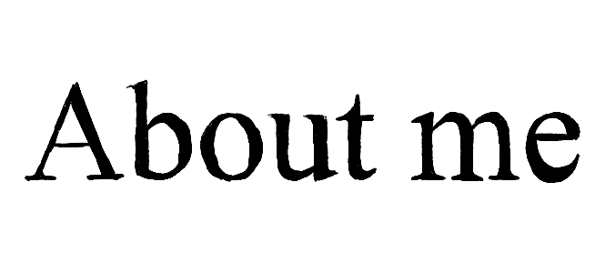

Hello! My name is Clara Longo de Freitas, a Brazilian native pursuing my bachelors degree in Journalism and Spanish at the University of Maryland.
I'm a storyteller to the core. I'm a journalist focused on long-form and feature writing with real-world experience in investigative journalism. But I'm also passionate for creative writing; I started challenging myself into visual storytelling through photography and illustration; and I often spent hours telling funny anecdotes to my loved ones - the oldest form of storytelling.
Wanna learn more? Feel free to browse and contact me.